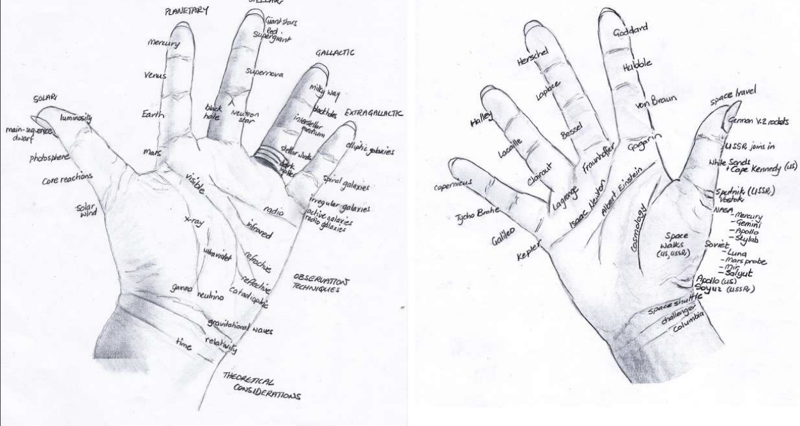
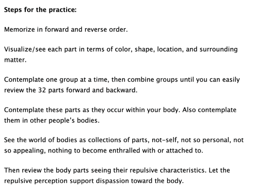
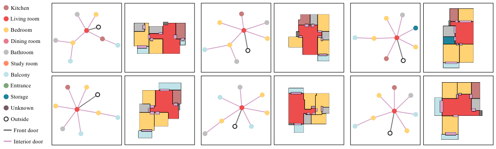
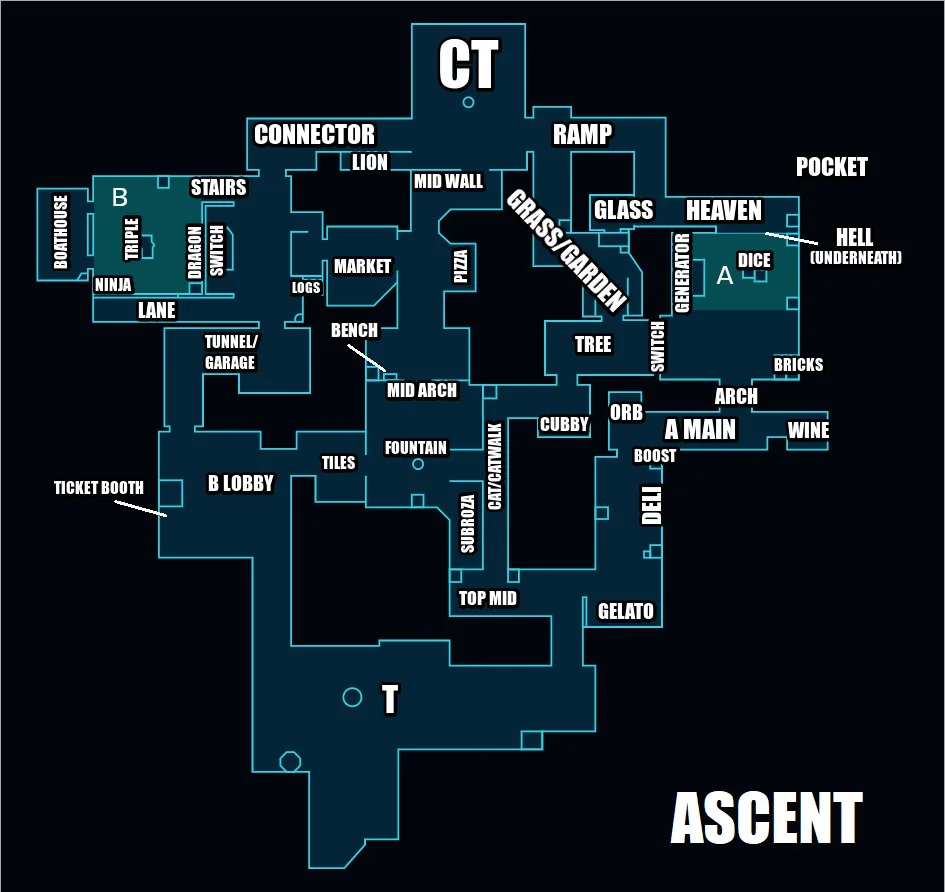

Book Review: Memory Craft
Table of Contents
- Book Review: Memory Craft by Lynne Kelly
- Necessary Context: What Is a Memory Palace
- Attention Restoration Theory and The Joy of Looking
- Mnemotechnics as Proto-Writing
- In Defense of Consuming Media: Rapscallions and Mythology
- Meditation and Memory
- Conclusion
- Afterword A: random advice on using memory palaces
- Afterword B: stray thoughts on some of the cool memory knick-knacks
- Afterword C: The Zero-Headed Calf
Book Review: Memory Craft by Lynne Kelly
To say Lynne Kelly's Memory Craft is a book about memory techniques almost is not quite correct. It feels more like an exploration of how human beings mentally organize information. I've read a couple of memory training books prior to this one, and those books in comparison have been at one of a pretty dramatic extreme. A lot of these books, like Harry Lorayne and Jerry Lucas' The Memory Book, feel like they are about little party tricks you can learn and apply virtually immediately. Others, like Josh Foer's Moonwalking with Einstein, are directly about memory competitions, and the crazy grind that any competitor needs to undertake in pursuit of becoming the best.
This book, by comparison, feels like a quaint, comfortable middle ground: it's a book which isn't completely wrapped up in memorizing random lists of arbitrary information as fast as possible, and frequently takes excited detours to talk about some irrelevant little gem of information1. It's something which genuinely just seems fun to the author, and it motivates the personal curation of memory systems beyond simple one-digit pegs or simple links.
I had a lot of thoughts after reading it.
Necessary Context: What Is a Memory Palace
This won't be a comprehensive summary of the whole book, but just so you know what is going on: this book is about memory techniques, with a special focus on the most important of all: the memory palace2. The way this works is you mentally picture a location you know really well: maybe your house, or your commute to work. At specific landmarks along this path, you mentally place some outrageous picture. Now if you retrace your steps and think of the landmarks, you'll think of all the pictures you put there, and you can remember huge amounts of information if those pictures mean something. People have used these techniques to memorize dictionaries, novels, playing cards, random numbers, names, you name it.
I won't go into too much detail on this in this review. If you want to learn this sort of thing, this pdf is a pretty good place to start. A lot of this book dives into how different cultures independently developed variants of this to memorize their oral histories, and the various tools they used (boards, jewelery, artwork) as proxy for memorizing physical locations.
Attention Restoration Theory and The Joy of Looking
I remember a few months ago I spent some time with some friends in Shenandoah National Park, down in Virginia. Once you get into the park, you almost immediately lose cellphone service, so I didn't bother taking my phone around with me on the hikes. There was a moment in my trip which in particular stuck out to me. I had just reached the summit of Bearfence3, and I was peering out over the top of this tall, tall mountain and thinking to myself about how cool the view was. After a moment, I felt a brief flash of boredom, and instinctively reached into my pocket to look at my phone, only to feel a private sense of embarassment to find that the only thing in my pocket was my flashlight.
And so it was for a lot of this trip: I hadn't quite anticipated how much of this trip would end up being a genuine social media detox, where I was forced to repeatedly bash my head into fixed-action patterns I had developed around the use of my phone. It was a sort of trial by fire to force myself to actually exist in the world rather than through the terminal of a portable screen.
It was really nice.
I think about that trip often, usually after I've gotten too wound up about the latest internet nonsense. In Cal Newport's Deep Work, I once read about the idea of Attention Restoration Theory or ART. The core concept here is that people can concentrate better if they spend time in nature every so often, or even just look at peaceful natural images. This might have some sort of mechanism via stress reduction, or maybe something involving the default mode network. Like all psychology, it's disputed, and not clear if it replicates. But since that park trip I've come to the conclusion that sometimes, you really just need to go touch some grass, and everything will somehow start to feel better.
Where am I going with this – a surprising thing about this book was its attention to going on actual journeys rather than just mental ones through a memory palace. It's a very amusing part of the book: Kelly will go on these long, 5 kilometer long walks around her neighborhood and intensely look at her surroundings, mining for locations for her memory palace, placing mental pictures in those loci, reinforcing those mental pictures. She talks about people giving her strange looks, since it just looks like she's unusually interested in their homes. In my own rudimentary use of memory palaces, I've spent the time mostly wandering around relatively small spaces, usually my home or the home I grew up in, and walked pre-defined routes which are easy enough to remember. However, there's certainly a limit to how many locations you can store in a single small building before things start to get a little crowded.
There's an excerpt a really like from this book where Kelly takes a 15-year-old student on the 5 kilometer walk she uses as a huge memory palace to memorize history.
I naively assumed Ruben would simply use my locations. I thought that he would use the same key characteristics of the ancestors as I had and link to those locations. But none of that happened.
Ruben kept finding his own significant locations: a sign I had never noticed, a seat I had overlooked, the back of a building where I had used the front. His Cicero was orating, while mine was memorizing. He was far more engaged and enthusiastic about creating his own memory palace, and his own interpretation of the ancestors, than he would have been simply learning mine.
This my favorite few sentences in the entire book. I think a lot of people do not really understand why you have to make your own system for this stuff, and why can't you just take someone else's. But mental journeys are just that: journeys. Going for a walk and really paying attention to your surroundings, really grasping where you are, what is sharing your environment with you, how everything is related; it's all deeply personal, because even traversing the same path as someone else, you are you and not them.
At the same time, it really is pretty wonderful to go on those journeys with someone else, right? Even deeply paying attention to an environment you know well, another perspective could show you something new embedded in something you've seen a thousand times.
It all feels flowery and metaphorical, but no, really, sometimes there's just a cool rock you haven't seen before.
Mnemotechnics as Proto-Writing
One thing I thought was super compelling about this book was the discussion about how many pre-literate indigenous cultures independently invented portable devices that could be used as pegs for memorizing things. These pop up all over the place: those of you with Catholic backgrounds can probably think of Rosary beads which help for remembering how to recite prayers. What really brings it all together is the Incan Quipu, which is a method of tying strings together which can encode numbers and narrative information. This gets really close to sounding like a writing system, and where it falls short is that it's unclear or unlikely that any knot patterns represented any phonetic utterances.

Sumerian cuneiform almost suffered the same fate, but graduated from a mere bookkeeping method due to our good friend, the substitute word technique. Just like how you might substitute "mini soda" to remember "Minnesota", things that were difficult to represent as symbols on clay tablets were sometimes encoded using symbols that were easy, but kind of sounded like the difficult thing if spoken aloud. Unlike other systems in this book (and unlike Quipu), this made the symbols useless to people who didn't speak the same language, and eventually kickstarted this whole arc of history where writing represents the sounds people make, rather than just being landmarks for the ideas they have.
You can see this entire process in the etymology of hanzi characters, which are noteworthy for being both pictograms + utterance representations.
Putting this a bit more directly than was put in the book, this process occurring in several different cultures suggests something sort of interesting: it is almost like humans were destined to one day invent writing, because of how the human memory works. Furthermore, because a very powerful type of memory exists in human brains (spatial recollection), it is highly likely that techniques would be independently developed to remember any type of thought leveraging this, highly likely that systems would spring up to streamline that encoding process, highly likely that eventually we would invent systems to compose symbols to help us remember specific utterances.
Writing is such a cool thing to come out of this evolutionary process: it's just a mnemonic for a chain of sounds! We only ever notice that text doesn't immediate beam the meaning of the text into our brains when we read a word we do not know the meaning of. Inventing a mnemonic system so excellent that you can put other people's thoughts into your own head is a degree of power that goes underappreciated in our day-to-day life4. I never would have made this connection between human memory and the emergence of writing, but when it's laid out it feels almost painfully obvious.
In Defense of Consuming Media: Rapscallions and Mythology
Living in a godless world has its disadvantages.
Media consumption, I think, gets a bad rap sometimes. Negativity towards fiction, and claims that consuming it will dull the mind, have been around for many hundreds of years. Gottfried Wilhelm Leibniz allegedly claimed that the flood of books into Europe after the invention of the printing press "threatened a return to barbarism"5.
There are a few things in this book which, when tied together, offer up a nice sort of practical justification for consuming media – more specifically, that modern media supplants the fundamental human need for colorful and memorable characters to use in mental stories. Lynne Kelly makes the claim that mythological systems being so ubiquitous among indigenous cultures was because the important information in the stories using characters who represent important abstract concepts. Kelly respectfully dodges the insinuation that these are all "fictional characters", instead referring to this concept as "rapscallions".
Without the entertainment, people would not be willing to listen in order to reveive and remain familiar with the encoded knowledge.
It's genuinely quite useful to have a wide range of mental "actors" to pick from, especially if they are emotionally evocative. Because the images stick better the more bombastic and ridiculous they are, fictional characters often work even better than historical figures (although often still less so than friends you see on a regular basis). I watch a good amount of anime, and I often feel some degree of guilt that I am not doing something more productive with my time. No longer! From now on, the only unproductive media consumption is watching something so unmemorable that I can't use any of the characters to remember something later6.
Another fun thing Kelly recommends in here is to invent your own rapscallions in order to serve as stand-ins for abstract concepts:
When you need to learn an abstract themes, give it a character. Electron is a really negative guy. Commas are commoners… When you weave stories around the character, the associated facts become memorable.
As with the above, anime fans have long been ahead of the curve at creating godforsaken little guys via Moe Anthropomorphism. A lot of these characters are given the suffix -tan in their names, which is a baby-talk corruption of the -chan suffix which is used to refer to cute things. My two favorites are Wikipe-tan and AlphaGo-chan7, with the OS-tans not far behind8.
This is all to say: you should be making moe anthropomorphisms of your favorite things. This is a useful, productive, and not at all frivolous practice. Be free.
Meditation and Memory
When I was learning my PAO pegs for the first time, I remember I would start at 00 (Snoop Dogg) and travel down the list as far as possible until I couldn't think of something. I would do this before falling asleep, in the shower, in idle daydream time, that sort of thing. Usually I would make it to around 10 or 11 before getting distracted and thinking about something else. It was a very familiar feeling for some reason – it took me a moment to realize I had independently re-invented a sort of weird kind of mindfulness meditation, where instead of focusing on my breathing and counting upwards, I was focusing on a mental picture of Kanye West (07) while counting upwards.
Meditation has some really interesting overlap with mnemonics, and it pops up a few times in this book. The most direct of these is a section on Thomas Aquinas.
"…It is clear, too, that by the frequent act of remembering the habit of memorable objects is strengthened, as also any habit (is strengthened) through similar acts; and a multiplication of the cause fortifies the effect." That's the big lesson from Thomas Aquinas: meditate. Go over your journeys and palaces, your memory boards and songs, but do it gently and slowly. I often do this when going to sleep. If you can slow yourself down to think about only one or two locations, this form of meditation is incredibly relaxing. The more often you contemplate your memory locations, the more they will become an integral part of your thinking and knowing.
But what really stuck out to me as a pseudo-meditative practice wasn't the act of reviewing, but the act of using your own body as a memory palace. Wang Feng, former memory world champion, covered this in his lectures as well. Much like any memory palace, lukasa, or other such container for locations, the human body is a place with predictable structure that we take with us everywhere we go. Some people simply use body landmarks, and travel a set path along your body9.

This is remarkably similar to body scan meditation, which is a technique used in mindfulness meditation to bring explicit attention to the experienced sensations at various parts of the body. We usually filter out a lot of these sorts of sensations (e.g. the feeling of your clothing resting upon your body), and body scan can help with stuff like relieving tension you don't realize you are feeling.
"Body Scan", as it currently is taught in western meditation, is a largely secular stress-reduction based technique which was popularized by Jon Kabat-Zinn, and you'll encounter it if you use popular meditation apps like Headspace. However, its roots likely trace back to the Satipatthana Sutta, a text which outlines the fundamentals of vipassana meditation. One of the traditional meditations outlined in this book is the 32 parts of the body: a technique whose purpose is to develop concentration and resist attachments related to the body. A related discourse pātikūlamanasikāra refers to 31 parts of the body (subtracting the brain), which is interestingly the same amount of locations Lynne Kelly provides on page 132 of Memory Craft10.
Digging around, it's not hard to see how this shares a lot of similarities with our mnemonic descriptions above. I found this example practice from Insight Meditation South Bay which uses a lot of very familiar language:

This speaks to how a lot of these techniques saw a lot of use in religious practice over the long arc of human history. Buddhism in particular has a lot of oral history, monastic education, meditative practice, and chanting of sutras which are covered extensively among indigenous cultures throughout Memory Craft. It's no surprise to me that the same methods were used in perhaps the most famous monastic tradition in history.
Conclusion
The general thesis of this book, I think, is that the system used in particular, genuinely, does not matter. Almost at all, to be frank. Lynne Kelly spends half the book independently reproducing dozens of unrelated and independently created mnemonic systems from a wide variety of indigenous cultures, and they all just work. You get a mental picture of Lynne Kelly hosting a guest at her house, a house filled with these inscrutible knick-knacks. The guest sees a Lukasa on a table and asks "is this your daughter's arts and crafts project?" and she replies "no, that's every bird native to Australia".
What makes all of these systems go is the process of encoding information onto something, and the aides are all just a latch for focus of the conscious mind onto some previously encountered information. The human mind wants to remember, and often all it takes to remember anything is an emotionally evocative picture placed in a familiar location. Reading this book, I was struck by how often I would think "I should do more drawing", or "I should go for more walks", with those thoughts being downstream of "I want to remember equations in machine learning papers".
In a way I think it checks out: the mental picture we tend to have of learning large amounts of information feels like hooking our brain up to a textbook using a big cable and "downloading" it somehow. This way of thinking bleeds into how we study or learn new things, and it misses two huge concepts essential to understanding how we remember: that information is supposed to be used in our lives somehow, and that we are human beings living in the world. Isn't it only natural that it's easy to remember things if we put a strong emotion (ourselves) into a familiar space (our lives)? It certainly feels like a better framing than "naturally" remembering every new fact like we would try to remember a random string of numbers and letters.
Afterword A: random advice on using memory palaces
A mind map is pretty much just a 2D memory palace, the same way that a mandala is like a memory palace. The easiest thing I can show you to demonstrate this is the figures from a machine learning paper called House-GAN++, which will take a graph of nodes and edges and output the floor plan of a building which adheres to it.

In a similar vein, a memory palace is kind of like a graph. Specifically, that it's less like a linked list, even if you can use one that way. A lot of these books discuss traversing along a particular path in a memory palace, in the same way that you could do so for a fully connected graph (even if you could take different paths than the one you did). The big advantage memory palaces have over other methods is that you can layer a ton of information this way: every location can become it's own little rabbit hole if you attach enough images to it. You may need to order stuff around or settle with the link method for specific ones, but the layering + flexibility to add new information is the important thing that makes it useful.
Something I did not do (or think of) prior to reading this book is making sure every 5th location in your memory palace is something big and memorable, so you know if you've skipped something. Likewise, making sure all of the locations in your memory palace have specific names so that you can associate images to the locations easier. Both of these fall under the general idea of caring a lot about the creation of your loci, which is something I was doing in a super haphazard way before reading this book. I think a fun analogy can be made to callouts in Valorant: you need to be able to refer to pretty specific spots as you navigate around.

Just do this for all your loci. If you play Valorant you can probably just use the maps for a free easy virtual memory palace of like 40-50 locations per map.
If you do not have perfect photographic recollection of a particular character in your memory palace, that's more than likely okay as long as it's clear enough for you to not get mixed up with another character you are using. For example, I use Wayne Gretzky and Nolan Ryan in my playing card PAO pegs, and I genuinely do not really know what they look like. As long as I can see a hockey player or a baseball pitcher, though, I can get the card just fine.
Afterword B: stray thoughts on some of the cool memory knick-knacks
Lukasa, or memory boards, are kind of an interesting concept, a sort of single-person proto-writing which leverages the additional texture offered by a three dimensional object rather than markings on a flat 2D plane. I wonder if there's some cool projects to be done with making these via 3D printing. I am admittedly not sure if I'm getting caught up in Kelly's "try every technique" mania here, but it seems like a nice practical use for the random junk that everybody seems to like to make with 3D printing.
Likewise, the ceremonial staffs being used for mnemonics in rituals is really interesting. It makes for a compelling fantasy setting, where staves and wands are like little libraries that physically encode spells, which is why certain wands / certain staves seem better for water magic or fire magic or whatever. To be a powerful mage, who has mastered wandless magic, able to cast any spell without aid! I know wands in nethack work this way (where specific wands hold specific spells) so I wonder if I just do not read enough fantasy and this is exactly how they have always worked this entire time. Well, whatever. Zap!
One technique covered in this book is using a set of pieces and moving them around a desk, like they are actors on a stage. When I read about this, my mind went to tabletop games. I don't really play tabletop games, but I have seen a lot of those little figurines that the warhammer players use, and I bet you could encode some great stories with those compared to just using random rocks.
Afterword C: The Zero-Headed Calf
Tomorrow when the farm boys find this
freak of nature, they will wrap his body
in newspaper and carry him to the museum.
But tonight he is alive and in the north
field with his mother. It is a perfect
summer evening: the moon rising over
the orchard, the wind in the grass. And
as he stares into the sky, there are
twice as many stars as usual.
– Laura Gilpin
The stars were once a common memory palace. I wonder why that isn't true anymore? Like the author, I thought using the constellations would be a practice which just does not seem to make that much sense.
I thought about this briefly, for about ten seconds. Well, there's light pollution now. I haven't lived somewhere I could see stars for a decade now.
Alas.
Footnotes:
Not unlike, you know, wandering through a memory palace.
This is sometimes called the method of loci, but that's much less pretty to say.
I didn't take this photo (I did not have my phone), it's just from tripadvisor. It was right upon that rock in the picture where I reached for my phone to check Twitter, though, just to provide some context on how insane it was that I tried to do that.
I could probably write a completely separate post on machine learning perspectives on what words are, about how writing and language approximate the "shape" of the inside of the human mind, and about how LLMs display sparks of intelligence completely based upon this external coding of thoughts. This review is already long enough, but please know that you can nerd snipe me with this topic at any time.
I say allegedly mostly just because I can't find it. I found this in a big think article titled "TMI: We've always had too much information (and we've survived just fine)", but it was an offhand comment and google at useless at showing you negative quotes in search results these days.
Unfortunately, this is a lot of anime
art by chintara10
These actually ending up being used by Microsoft for ad campaigns in Singapore is maybe information that is so delightful that I wish I didn't actually find out about it.
This seems a bit too weird of a random number to be complete coincidence, although the actual parts of the body are different. Maybe this is some sort of easter egg? Maybe 31-32 is just the perfect amount of body parts to remember?